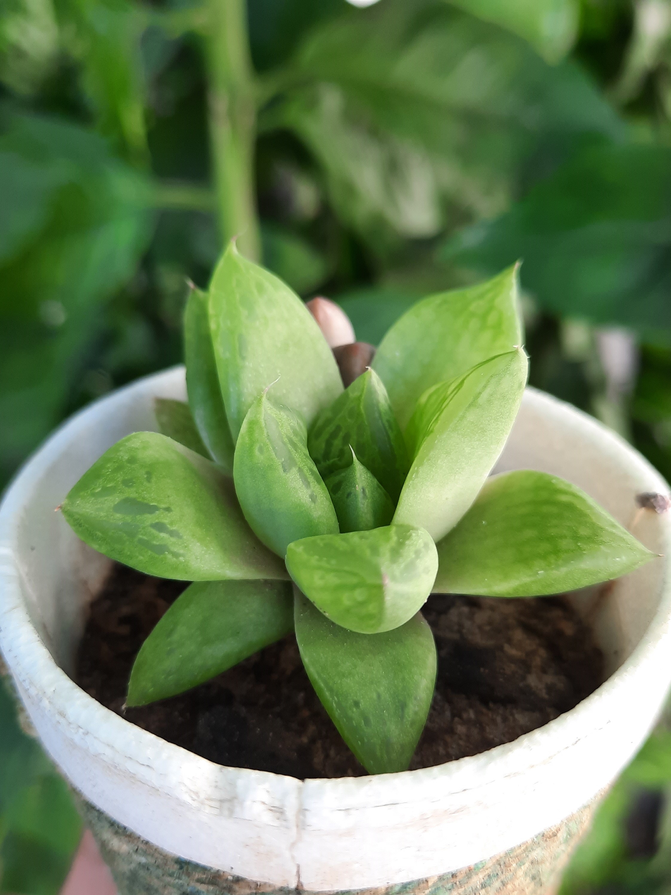
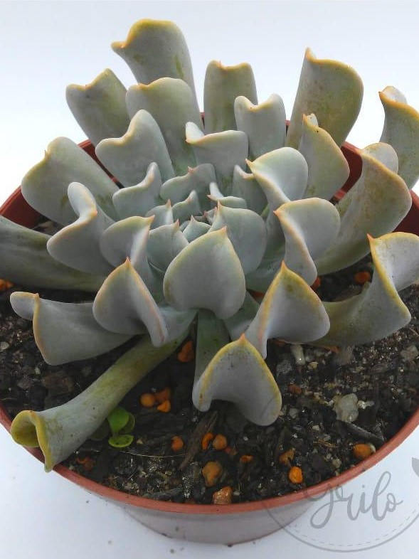
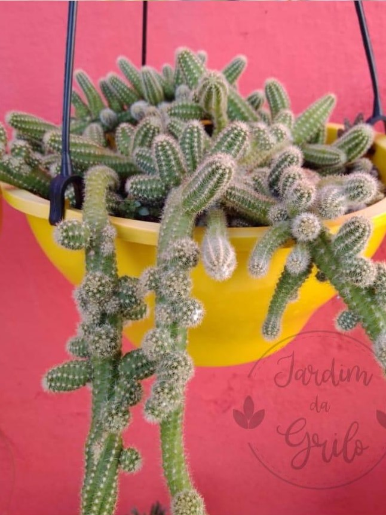

Plantas Ornamentais (Suculentas)
Plantas ornamentais são cultivadas pela beleza e utilizadas para decoração. Nesta página, você conhecerá as suculentas, que são plantas ornamentais conhecidas pela capacidade de armazenamento de água prolongado, o que faz com que a procura por elas seja maior, uma vez que não precisam de água todos os dias e mantêm a beleza do ambiente.





Desenvolvido e atualizado por: Liliane Rodrigues, Marilly Hellen e Natan Luis.